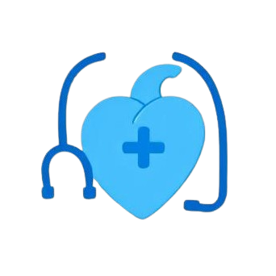
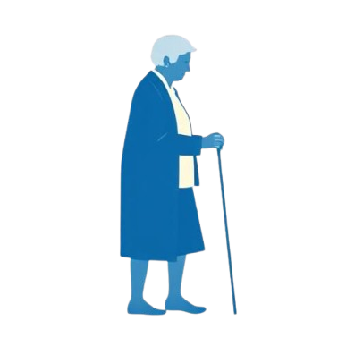

Pilihan Layanan
Akses Layanan Kesehatan Tanpa Ribet
Nikmati layanan kesehatan yang praktis dan terpercaya. Dari konsultasi dokter hingga resep obat semuanya bisa diakses dengan mudah.
Konsultasi Dokter Umum

Konsultasi Spesialis
Konsultasi Kesehatan Mental
Konsultasi Kesehatan Anak

Konsultasi Kesehatan Lansia
Konsultasi Kesehatan Gigi

Konsultasi Kesehatan Wanita
Konsultasi Kesehatan Mata